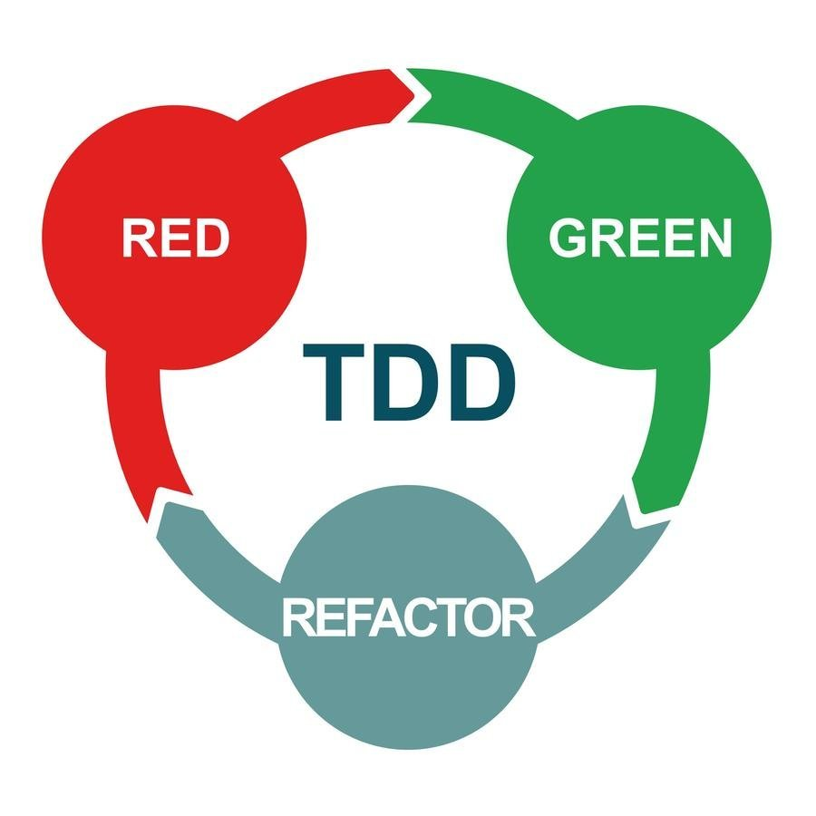
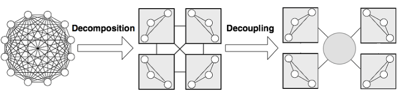

Test Driven Development
В жизни каждого разработчика или команды разработчиков возникает момент, когда код написан, проект подходит к концу и вот вот должен быть сдан, какие-то баги были пойманы и поправлены, что планируется доделать в слудющих версиях, но внезапно приходит понимание: у нас куча программного кода, сложнейшие бизнес-процессы и мы вообще не уверены, что все это будет работать так, как задумано. В такой момент программист начинает задумываться о тестах, и, зачастую ситуация такова, что тесты ему уже не помогут.
В данном разделе я бы хотел освятить подход к разработке, позволящий избежать подобных ситуаций и чувствовать себя защищенным от неожиданного поведения разработанного ПО.
Концепция
Test Driven Depelopment (рус. разработка через тестирование) или TDD является техникой разработки придуманной Бек Кентом и заключается в построении процесса написания исходного кода в виде которотких циклов. Эти циклы состоят из следующих этапов: написание теста, покрывающего будущий код; написание кода, позволяющего этому тесту успешно пройти; рефакторинг и приведение кода к конечному виду.
Изначально этот подход появился как часть методологии "экстремального программирования", автором которой также является Кент Бек, но со временем стал независимым и достаточно востребованной практикой разработки программного обеспечения.
Разработка через тестирование заставляет разработчика описать требования к коду в виде тестов еще до непосредственно кодирования. Такой подход позволяет не только писать писать изначально корректный и проверенный код, но и влияет на архитектуру кода или приложения в целом. Так как при написании модульных тестов разработчик ставить себя на уровень "пользователя" кода, он может более широко взглянуть на то, каким образом модуль должен реализовать те или иные требования, а также насколько легко будет этот модуль тестировать.

Рисунок 1 - Главаня концепция TDD – красный/зеленый/рефакторинг
Главным приемом TDD является так называемый "красный/зеленый/рефакторинг". Его идея заключается в том, что изначально написанный тест, покрывающий будущее изменение кода не должен проходить. Это позволит разработчику убедиться в том, что тест не является пустышкой, а действительно что-то проверяет. Затем, цель программиста состоит в написании кода, который удовлетворит тест и приведен к "зеленому свету" в окне IDE. Этот зеленый свет позволяет разработчику вступить на дорогу рефакторинга и привести исходный код разрабатываемого модуля в порядок. Важно отметить, что автор кода может не переживать о том, что этот процесс приведет к ошибкам, так как уже сущесвует тест, который нужно снова прогнать дабы удостоверится в том, что "зеленый свет" на месте: можно идти дальше. Если после рефакторинга разработчик видит "красный свет" в результатах тестов, он должен остановиться и исправить код, либо откатиться к моменту, когда тесты проходили успешно, что зачастую легче, чем работать с отладчиком.
Преимущества
Как было сказано выше, разработка через тестирование заставляет разработчиках думать об архитектуре и тестируемости кода еще до его написания. Это позволяет избавляться от антипаттернов проектирования и писать более простой и чистый код. Так как TDD в основном опирается на модульные (unit) тесты, разрабатываемые классы становятся более независимыми и изолированными, снижается зависимость между модулями. Принципы TDD позволяют разработчику отставлять заглушки на местах, непокрытых тестами, а внешние зависимости подменять. Все это способствует более детальной концентрации на конкртеном бизнес-требовании, которое разрабатывается в данный момент, что в конечном итоге приводит ПО к комплесу небольших и лаконичных копмопнентов, каждый из которых реализует тот или иной бизнес-процесс.

Рисунок 2 - Идея модульной архитектуры
Так же, упомянутый выше цикл разработки через тестирование, позволяет обеспечеть безопасность рефакторинга исходного кода приложения. Лучше всего это проявляется при обращении к написанному коду через длительное время либо другим разработчиком. В данном случае любое изменение может привести к ошибке, которая при отсутсвии тестов может быть выявлена не сразу, при наличие тестов же всегда есть гарантия того, появилась ли неполадка в результате изменений.
Стоит отметить, что разработка через тестирование позволяет сэкономить большое количество времени, выделяемое на отладку программного обеспечения. Несмотря на то, что данный подход требует большого количества кода в тестах, затраны на написание этого кода зачастую значительно ниже, чем затраты на поиск и исправление ошибок. Учитвая, что с увеличением объема проекта растет и количество ошибок, расти будет и выгода от наличия заранее написанной кодовой базы для тестов.
Ко всему прочему, тесты являются хорошим местом для хранения документации по методу, классу или модулую. В большинстве случаев документация хранится обособлено от кода и быстро теряет актуальность. Размещение описания алгоритмов или UML-диаграмм в тестах позволит наглядно наблюдать на сколько код соответсвует своей документации.
Недостатки
В области разработки программного обеспечения существуют задача, которые достаточно сложно решить базируясь на тестах. К таким задачам можно отнести многопоточное и асинхронное программирование, вопросы безопастности или специфического сетевого поведения. Подобные задачи проще проверить на этапе интеграционного тестирования, что несвойственно для TDD.
Также одной из ключевых проблем применения подхода разработки через тестирование на реальном проекте является сложность донесения до руководства или заказчика необходимости временны́х затрат на написание тестов. Обычно, упрощение эксплуатации кода на этапе поддержки заботит в первую очередь программиста, авторов задач в основном интересует насколько быстро их требования будут реализованы.
В свою очередь наличие большой кодовой базы тестов порождает задачу ее поддержки и изменения в будущем. Учитывая, что основной акцент по улучшению читаемости и совершенствованию архитектуры делается на основной код приложения, тесты со временем могут становится абузой для разработчика и вместо того, чтобы решать задачу их успешного прохождения, простое отключение тест-класса будет менее затраным.
Личное мнение и опыт применения
Исходя из описанного выше, стоит сказать, что в в общем случае разработка через тестирование является хорошим решением для разработчика и применение этого подхода может значительно облегчить ему жизнь. По собственному опыту могу сказать, что с применением TDD увеличивается время, затрачиваемое на реализацию конкретного требования к проекту, но время реализации новой версии проекта становится значительно меньшим. Подходя к заключительной части решения комплекса задач, который должен уйти в релиз, все его составляющие оказываются проестированными и отлаженными, а интеграционное взаимодействие может быть менее объемными и более абстрактными тестами.
Все это позволяет избегать ситаций, когда на этапе сформированной архитектуры приложения выявлятся ошибки, исправление которых требует критического нарушения этой архитектуры и значительных дополнительных затрат по времени.
Опыт показывает, что использование TDD наилучшем образом проявляется тогда, когда существуют внятно сформулированные требования к ПО. Это позволяет ставить коду конкретные задачи в тестах и подходить к кодированию с понимаем "что, куда, как", а главное - "зачем".
Да, не ко всем задачам или в целов проектам стоит подходить со стороны тестирования, в некоторых случаях это может вызвать дополнительные неудобства и только усложнить процесс реализации. Иногда, понимание того, как должен быть спроектирован код и какой функционал должен быть у отдельных модулей, приходит только в процессе написания этого самого кода. Обычно, такое бывает, когда задача и инструменты для ее решения новы для программиста.
В заключении, хотелось бы сказать, что любой описанный в статьях или книгах подход нужно использовать индивидуально и подстравить под себя или нужды компании, а не быть заложником тех или иных парадигм разработки программного обеспечения.
Выпускники прошлых лет, интересующиеся похожими темами
Описание: Рассмотрены тенденции развития облачных приложений и их тестирования на примере Google App Engine.
Описание: Раскрыто понятие проектирование взаимодействия программных систем и даны реккомендации по изучению и применению данной области знаний.
Описание: Описаны основы JavaEE, подлежащие изучению для будущего трудоустройства. Упомянуты библиотеки для модульного тестирования.
Рекомендуемые ресурсы и литература
Автор: Бек К.
Описание: Настольнаяк книга любого разработчика, желающего применять методологию разработки через тестирование.
Автор: Tarlinder A.
Описание: Советы и рекомендации разработчику по процессу тестирования исходного кода.